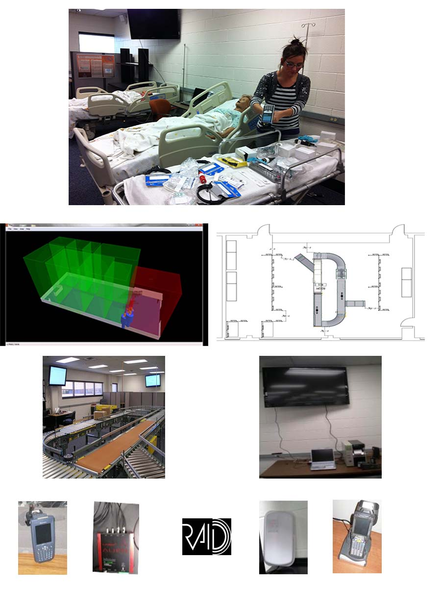

RAID Lab Facilities
Main Components of RFID
- Readers- Antennas- Tags
RAID Labs Goals
– RFID impact on enforcing the use of collaborated tools at a defense manufacturer– Integration of RFID and GIS system for ticket/seat location– Applying RFID technology to sports timing in a marathon– RFID testing of consumables in NASA Space Center (ISS) storage containers– Integration of Animal ID into systems for Cattle Tracking– RFID in the Operating Room with surgical tags– Integrating RFID into Healthcare Manufacturing Plant– Cost analysis for implementing RFID in Libraries– Expired Drug Inventory Reduction (VA) Nebraska-Western Iowa– RFID in Construction
Current Projects
– NSF International Research Experiences in Science for undergraduate students in Mexico at Monterrey Tech Queretaro, 3 companies
Upcoming Projects
– RFID Based Warehouse Management System (R-WMS) direct to Cloud (CiC)– Multi-Modal Automatic Identification (MMAID) for hazardous roadside materials– Identification of lost surgical sponges inside the body after surgeries– RFID ingestible pills for required regiments for infectious disease– NASA hands-free/unmanned tracking and locating of consumables and medical supplies
Future – Transportation Logistics Lab
- Equipment (Previous/Planned) Equipment Military grade Fixed and Mobile Active RFID Systems (Lockheed Martin – Savi technologies, RF Code)- Industry grade high speed automated conveyor (Hytrol conveyor)- Industry recognized RFID edgeware, ERP and WMS systems, (Global Concepts)- Walmart/DOD mandated standard fixed and mobile passive RFID systems (Alien Technologies, Matrics)- Hospital tracking location systems (Ubisense Ultra Wide Band Real Time Location System)- Building modifications – automated locks and MavID